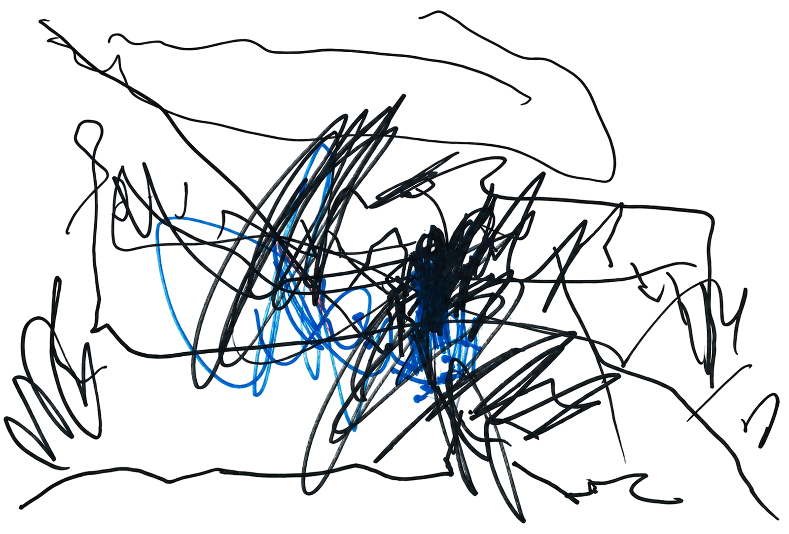
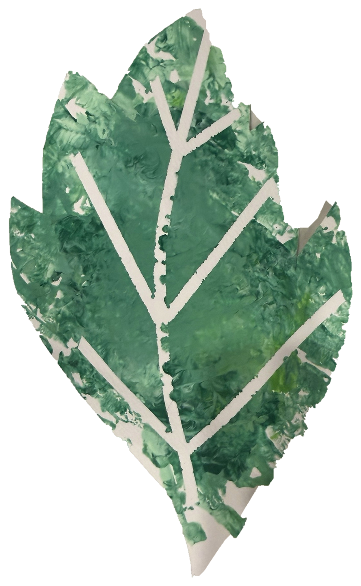
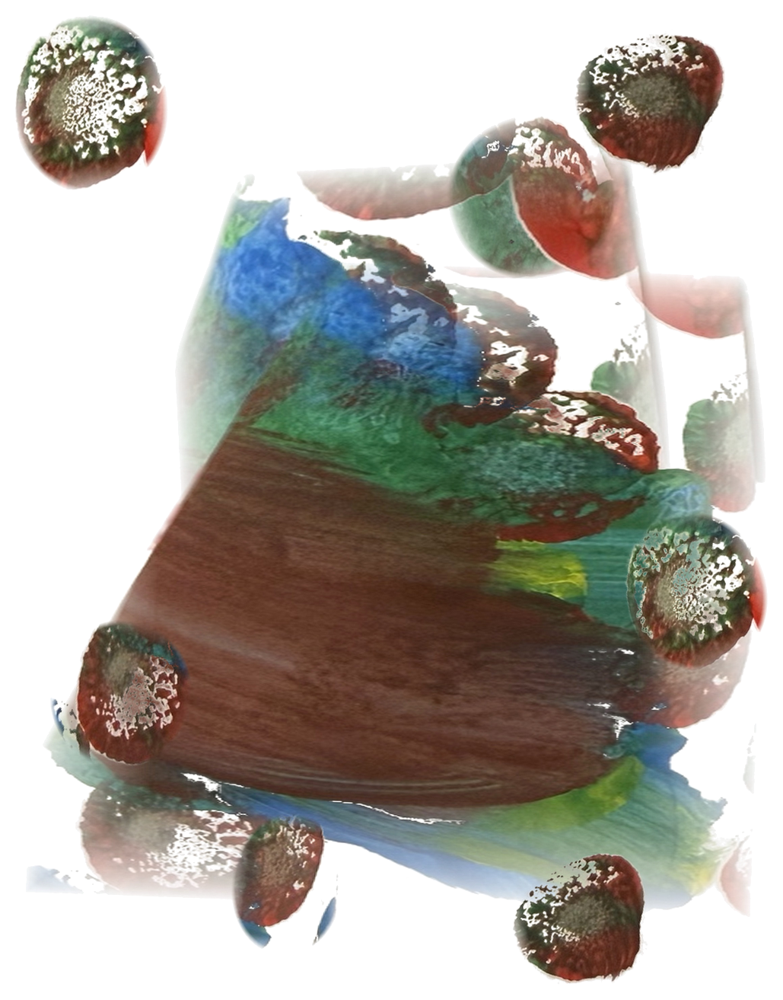

Lost the
thread.
This page wandered off. Happens to the best of us.
Back to findingArt by
Banks.
Every picture here was made by Banks, the toddler this app is named for. Crayon, finger paint, tape, stars. We just cleaned them up.


“the purple one where they go up”You said

Thinking about it.

No internet.
We need it to look things up. Your repeat offenders still work.
Try again